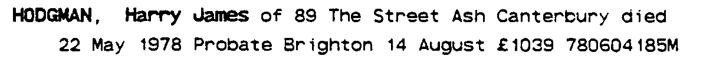
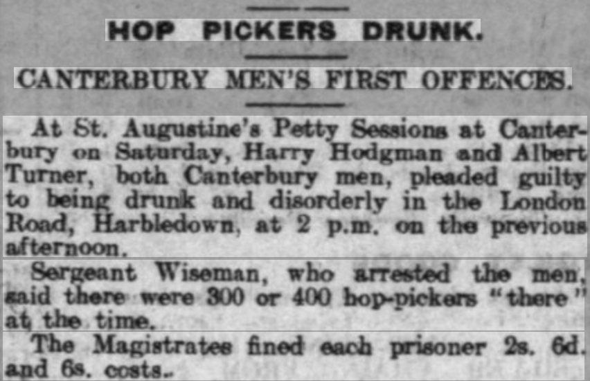
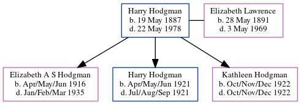

Harry James Hodgman 1887 - 1978
[ Home ] | [ Calendar ] | [ Surnames Index ] | [ Errors ] | [ Family History ]Harry Hodgman, the husband of Elizabeth Annie Lawrence (the great-aunt of Nigel Horne), was born in Eastry, Kent, England on 19 May 18871,2,3,4 and married Elizabeth (with whom he had 3 children: Elizabeth A S, Harry J and Kathleen C) in Thanet, Kent, England around Feb 19155.
During his life, he was living St Lawrence in Thanet on 2 Apr 19111; at Hoaden Cottages, Ash, Kent on 29 Sept 19392; and at 89 The Street, Ash, Kent in 1978.
He died on 22 May 1978 in Canterbury, Kent, England3 (age: 91).
Children
- Elizabeth A S was born in Apr/May/Jun 1916
- Harry J was born in Apr/May/Jun 1921
- Kathleen C was born in Oct/Nov/Dec 1922
Citations
- 1911 England Census Online publication - Provo, UT, USA: Ancestry.com Operations, Inc., 2011.Original data - Census Returns of England and Wales, 1911. Kew, Surrey, England: The National Archives of the UK (TNA), 1911. Data imaged from the National Archives, London, England. (Age in 1911: 30Marital Status: Single; Relation to Head: Son)
- 1939 Register - Findmypast (was a husband in the household)
- England & Wales, Death Index: 1984-2005 Online publication - Provo, UT, USA: The Generations Network, Inc., 2007.Original data - General Register Office. England and Wales Civil Registration Indexes. London, England: General Register Office. © Crown copyright. Published by permission of the Cont
- England & Wales, FreeBMD Birth Index, 1837-1915 Online publication - Provo, UT, USA: The Generations Network, Inc., 2006.Original data - General Register Office. England and Wales Civil Registration Indexes. London, England: General Register Office. © Crown copyright. Published by permission of the Cont
- England & Wales Marriages 1837-2005 - Findmypast
Media
Harry J Hodgman - probate

Elizabeth Lawrence - Harry Hodgman

Whitstable Times

1939 Register Transcription - TNA-R39-1819-1819C-010-16
1939 Register Transcription - TNA-R39-1819-1819C-010-15
England & Wales births 1837-2006 - BMD/B/1887/2/AZ/000277/130
Family Tree
Map
Generated by ged2site. Last updated on Jul 3, 2024
Known Issues
Residence record for 1978 contains no citation
No records of living with anyone